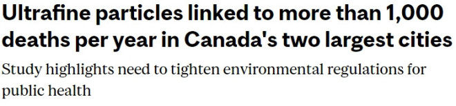

去年夏天，多伦多的空气质量极差，当时全国遭受最严重的野火，导致临时的烟雾污染。但是相比之下，我们全年呼吸的污染物更为险恶，也比我们想象中的更糟糕。

图源：mcgill.ca
加拿大知名大学麦吉尔大学经过15年的研究，本周发布报告得出结论，多伦多和蒙特利尔等城市空气中的超细颗粒物（UFPs）每年导致1100人过早死亡，迫切需要对这种特定类型的污染物进行更多的监管。
根据周一发布的研究，超细颗粒物由于其极小，能够在吸入后进入我们的血液，”可能导致心脏和肺部疾病以及某些形式的癌症”。研究人员注意到，研究期间，与超细颗粒物相关的呼吸系统死亡率增加了17.4%，冠状动脉疾病增加了9.4%，非意外死亡风险增加了7.3%。
这是加拿大首次研究长期暴露于这一类颗粒物的严重健康影响，报告指出“以前的研究没有考虑颗粒物的大小，可能错过或低估了与相关的严重健康风险。”
研究使用2001年至2016年的数据，涵盖了多伦多和蒙特利尔两个大城市，使用了地面测量、航空影像、土地使用信息等多种数据。
“我们的研究显示长期暴露于超细颗粒物与死亡风险增加之间存在明确的联系，这凸显了针对这些颗粒物采取监管行动的紧迫性，”文章指出。
“随着城市地区的不断增长，解决空气污染问题对城市居民的健康和福祉变得越来越重要。”